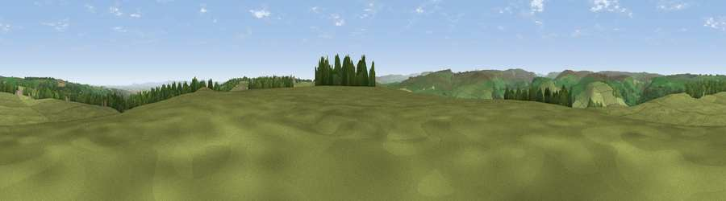

Viewpoint near Marske
#18162 in England · top 47% of its area beats it · near MarskeWhere it is
The exact computed spot (SE 12175 98475). Click the marker for map links.
The view, rendered

A 360° render of this exact spot computed from the terrain model, tree cover and land cover — summer colours, afternoon light, calibrated against photographs of famous viewpoints. Real trees, hedges and buildings will differ in detail.
The panorama
Grey silhouette: terrain skyline in each direction (720 bearings, Earth curvature and refraction included). Dashed green: skyline with trees (+15 m) and buildings (+8 m) as obstacles. Blue strip: how far the ground is visible on each bearing.
Where the view opens
Wedge length = distance to the farthest visible ground on that bearing (vegetation-aware). Rings at 10, 25 and 50 km.
What fills the view
90% grassland · 7% woodland · 2% cropland ·
Angular shares of the visible panorama (visual magnitude), not map area. Landscape diversity 0.17 (0–1 Shannon).
Key numbers
More beautiful places nearby
The staircase of upgrades: each row has a higher view potential than everything closer. Driving times are estimates from straight-line distance, calibrated against real road routing — check an actual route before setting out.
| Place | Direction | Drive | Score |
|---|---|---|---|
| Viewpoint near Hudswell | SE · 3 km | ~6 min | 60.6 |
| Viewpoint near Hudswell | NE · 4 km | ~9 min | 62.3 |
| Viewpoint near Hudswell | NNE · 5 km | ~11 min | 70.2 |
| Whit Fell | SW · 5 km | ~11 min | 70.7 |
| Viewpoint near Gilling West | NNE · 7 km | ~15 min | 71.9 |
| Viewpoint near Barningham | NW · 13 km | ~23 min | 74.1 |
| Viewpoint near East Witton | S · 13 km | ~24 min | 74.4 |
| Viewpoint near West Witton | SSW · 14 km | ~25 min | 75.6 |
54.38163, -1.81406 · source: screening · position refined by local search. Computed location — check access rights before visiting.